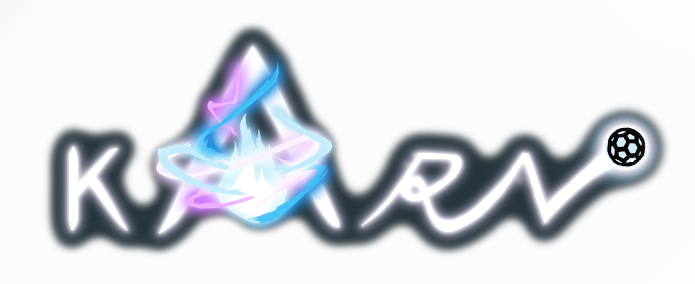

Equipe
3 personnes, étudiants à l'ICAN.
Temps
1 an
Technologies
Unity 3D / C# / 3DS MAX
Contexte
Karn est un projet de 3ème année en Game Design à l'école ICAN.
Résumé
C'est un plateformer d'exploration où vous évoluez dans un monde en 3D.
Téléchargez la documentation ICI.
Equipe |
3 personnes, étudiants à l'ICAN. |
Temps |
1 an |
Technologies |
Unity 3D / C# / 3DS MAX |
Contexte |
Karn est un projet de 3ème année en Game Design à l'école ICAN. |
Résumé |
C'est un plateformer d'exploration où vous évoluez dans un monde en 3D. Téléchargez la documentation ICI. |